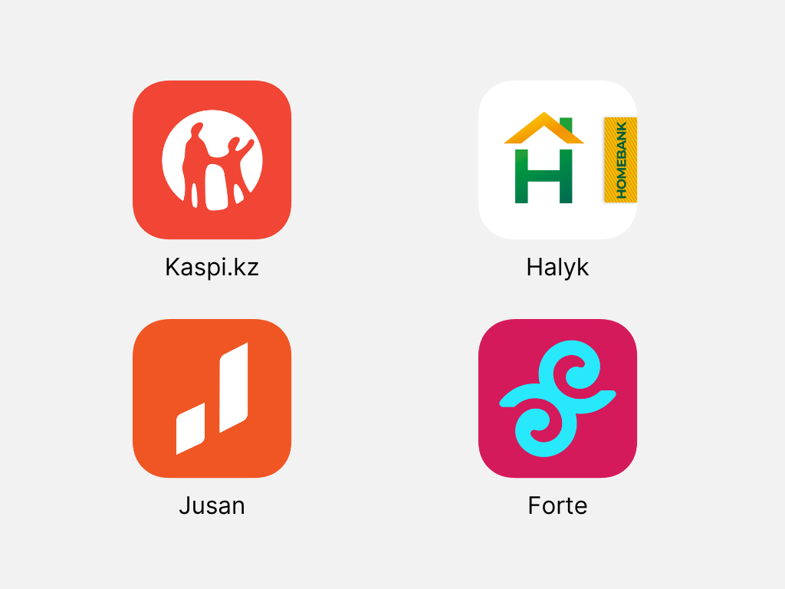
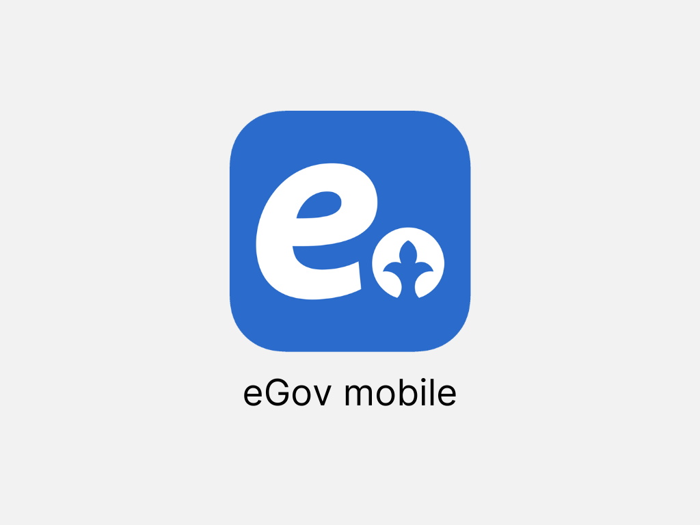

Цифрлық Қазақстанның дамуындағы банк үлесі.

Банк қосымшаларының өмірдегі рөлі.
Қазіргі таңда банк қосымшалары өміріміздің бір бөлшегіне айналды. Өйткені, бұл қолайлы! Үйде отырып, көлікті рәсімдейсіз, салықты төлейсіз және жақыныңызға ақша аударасыз. Сонымен қатар, жеке куәлік, жүргізуші куәлігі, вакцина паспорты мен анықтамалар да осында. Жақын арада тек бір QR кодты кез-келген банк қосымшасы арқылы сканерлеп, төлем жасайтын деңгейге де жетуге аз қалды.

Қазақстан БҰҰ "электрондық үкіметті" дамыту көрсеткіші бойынша үздік 30 ел қатарында.
Бұл жайлы ҚР Цифрлық даму, инновациялар және аэроғарыш өнеркәсібі министрі Бағдат Мусин өзінің Instagram парақшасында баяндады. Қазақстан БҰҰ рейтингінде "электрондық үкіметті" дамыту бойынша 28-орынды иеленді. Осылайша 29-шы қатардан бір орынға жоғары көтерілдік.
QR кодты сканерлеңіз.

Камераңызды ашып QR кодты сканерлеңіз. Сіз сайттың смартфонға арналған түріне ауысасыз.